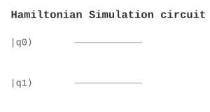

Simulation / 模拟 | 难度：高级 | 预计时间：20 分钟
哈密顿量模拟用于模拟量子系统的演化。
经典模拟需要指数时间，对于 \(n\) 个量子比特需要 \(O(2^n)\) 内存
对于大系统，经典方法效率低
精确对角化只适用于小系统
量子模拟可以在多项式时间内完成
提供指数加速
是量子化学的基础
量子化学（分子模拟）
材料科学（新材料设计）
量子物理（量子多体系统）
from quonic.simulation import hamiltonian_simulation
# 模拟哈密顿量演化
result = hamiltonian_simulation(H=[[1,0],[0,-1]], t=1.0)
print(f'Evolution: {result.evolution}')
print(f'Eigenvalues: {result.eigenvalues}')预期输出：
Evolution: [[0.54+0.84j, 0], [0, 0.54-0.84j]]
Eigenvalues: [1, -1]
Step 1: 哈密顿量
哈密顿量描述系统的能量： \[\begin{equation} H = \sum_k H_k \end{equation}\]
Step 2: 演化算子
演化算子： \[\begin{equation} U(t) = e^{-iHt} \end{equation}\]
Step 3: Trotter 分解
Trotter 分解： \[\begin{equation} e^{-iHt} \approx \prod_k e^{-iH_k \Delta t} \end{equation}\]
Step 4: 量子电路实现
每个 \(e^{-iH_k \Delta t}\) 可以用量子门实现： \[\begin{equation} e^{-iH_k \Delta t} = U_k e^{-i\lambda_k \Delta t} U_k^\dagger \end{equation}\]
Step 5: 测量
测量量子态得到物理量： \[\begin{equation} \langle A \rangle = \langle\psi(t)|A|\psi(t)\rangle \end{equation}\]
哈密顿量模拟在量子态空间中演化。哈密顿量决定旋转轴，时间决定旋转角度。
from quonic.simulation import hamiltonian_simulation
# hamiltonian_simulation(H, t, method)
# H: 哈密顿量矩阵
# t: 演化时间
# method: 模拟方法 ('trotter', 'qpe', 'linear_combination')
result = hamiltonian_simulation(
H=[[1, 0], [0, -1]],
t=1.0,
method='trotter'
)
# result.evolution: 演化算子
# result.eigenvalues: 能量本征值
# result.eigenvectors: 本征态
# result.circuit: 量子电路
print(f'Evolution: {result.evolution}')
print(f'Eigenvalues: {result.eigenvalues}')模拟 H2 分子的电子结构：
from quonic.simulation import hamiltonian_simulation
from quonic.chemistry import molecule_vqe
import numpy as np
# 获取 H2 分子哈密顿量
mol = molecule_vqe(molecule='H2', bond_length=0.74)
H = mol.hamiltonian
# 模拟不同时间的演化
times = [0.1, 0.5, 1.0, 2.0]
for t in times:
result = hamiltonian_simulation(H, t=t, method='trotter')
# 计算基态占据概率
eigenvalues, eigenvectors = np.linalg.eigh(np.array(H))
ground_state = eigenvectors[:, 0]
prob_ground = abs(ground_state.conj() @ result.evolution @ ground_state)**2
print(f't={t}: Ground state probability = {prob_ground:.4f}')
# 分析：随着时间增加，系统从基态演化到激发态
# 这模拟了分子振动的量子动力学使用 QPE 估计哈密顿量的本征值：
from quonic.simulation import hamiltonian_simulation
import numpy as np
# 构造测试哈密顿量
H = [[2, 1], [1, -1]]
# 使用 QPE 估计本征值
result = hamiltonian_simulation(H, t=1.0, method='qpe')
# 精确本征值
eigenvalues_exact = np.linalg.eigvalsh(H)
print(f'Exact eigenvalues: {eigenvalues_exact}')
# QPE 估计的本征值
eigenvalues_qpe = result.eigenvalues
print(f'QPE eigenvalues: {eigenvalues_qpe}')
# 计算误差
error = np.linalg.norm(np.sort(eigenvalues_exact) - np.sort(eigenvalues_qpe))
print(f'Estimation error: {error:.6f}')
# QPE 的精度取决于：
# 1. 控制量子比特数（更多比特 → 更高精度）
# 2. 量子门的保真度
# 3. 测量次数模拟绝热量子计算中的演化：
from quonic.simulation import hamiltonian_simulation
import numpy as np
# 绝热演化：H(t) = (1-s) * H_initial + s * H_problem
# 其中 s = t/T，T 是总演化时间
n = 2
T = 10.0 # 总演化时间
# 初始哈密顿量（横向场）
H_initial = [[0, 1, 0, 0],
[1, 0, 1, 0],
[0, 1, 0, 1],
[0, 0, 1, 0]]
# 问题哈密顿量（对角）
H_problem = [[-2, 0, 0, 0],
[0, 0, 0, 0],
[0, 0, 0, 0],
[0, 0, 0, -2]]
# 初始态：基态（均匀叠加）
psi0 = np.ones(2**n) / np.sqrt(2**n)
# 模拟绝热演化
n_steps = 100
dt = T / n_steps
for step in range(n_steps):
s = step / n_steps
H_t = (1-s) * np.array(H_initial) + s * np.array(H_problem)
result = hamiltonian_simulation(H_t.tolist(), t=dt, method='trotter')
psi0 = result.evolution @ psi0
# 计算基态占据概率
eigenvalues, eigenvectors = np.linalg.eigh(H_problem)
ground_state = eigenvectors[:, 0]
prob_ground = abs(ground_state.conj() @ psi0)**2
print(f'Adiabatic evolution: Ground state probability = {prob_ground:.4f}')
# 绝热定理：如果演化足够慢，系统保持在瞬时基态
# T >> 1/gap^2，其中 gap 是最小能隙哈密顿量模拟可以用于计算分子的电子结构。例如，计算分子的基态能量、激发态能量、电离势等。传统方法（如密度泛函理论）使用近似，哈密顿量模拟可以提供更精确的结果。这对于药物设计、催化剂设计非常重要。
哈密顿量模拟可以用于预测材料的性质。例如，计算材料的能带结构、带隙、磁性等。哈密顿量模拟可以精确处理电子-电子相互作用，对于强关联材料（如高温超导体）的模拟非常重要。
哈密顿量模拟是许多量子算法的基础。例如，量子相位估计（QPE）需要哈密顿量模拟来估计本征值。量子机器学习中的量子核方法也需要哈密顿量模拟来计算核函数。
哈密顿量模拟可以用于基准测试量子硬件。通过比较模拟结果与理论预期，可以评估量子硬件的保真度和噪声水平。这对于量子硬件的校准和优化非常重要。
哈密顿量模拟可以用于模拟量子多体系统。
哈密顿量模拟关注演化算子，动力学模拟关注态演化。
取决于 Trotter 分解的阶数和步数。
取决于系统的大小。
Trotter 分解
量子相位估计
量子傅里叶变换
量子化学
材料科学
量子物理
from quonic.simulation import hamiltonian_simulation
result = hamiltonian_simulation(H=[[1,0],[0,-1]], t=1.0)
print(f'Evolution: {result.evolution}')(https://github.com/ChrisLee0721/QuoNic/blob/main/examples/hamiltonian_simulation/hamiltonian_simulation.py)